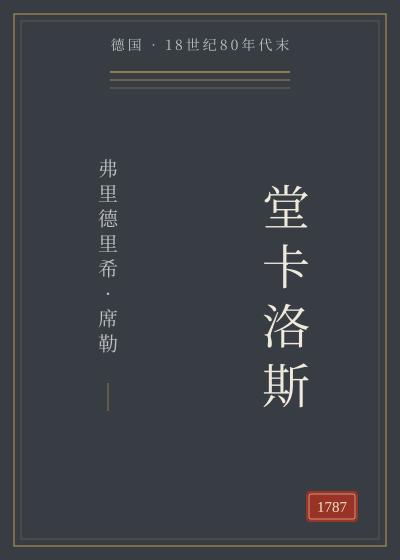

堂卡洛斯
一、基本信息
| 作者 | 弗里德里希·席勒 |
|---|---|
| 成书/出版 | 1787年（Britannica B366：Don Carlos——第一部素体诗主要剧作） Friedrich Schiller — Encyclopaedia Britannica（百科全书） |
| 国别/地区 | 德国 |
| 时代 | 近代 · 18世纪80年代末 |
| 体裁 | 戏剧 |
| 语言 | 德语 |
《堂卡洛斯》双重冲突图（主题·结构图）
二、创作背景
Britannica（B366）：西班牙宫廷剧——腓力二世、伊丽莎白·德·瓦卢瓦与爱上继母的堂卡洛斯——'broad political implications'。
Britannica（B366）：'the complex, brooding, and tragic figure of King Philip'。
Britannica（B366）：与歌德《伊菲革涅亚》'definitely established it [blank verse] as the recognized medium of German poetic drama'（Lessing《智者纳坦》1779 已用素体诗）。
三、内容脉络
（B366）父子冲突从家庭扩展到政治：佛兰德的自由（'broad political implications'）。
（通说待核）波萨侯爵的理想主义与宗教裁判所。
四、主要人物表
| 人物 | 身份 | 说明 |
|---|---|---|
| 腓力二世 | 西班牙国王 | （B366：King Philip——'complex, brooding, and tragic figure'） |
| 堂卡洛斯 | 王子 | （B366 书名人物——爱上继母） |
| 伊丽莎白 | 继母/王后 | （B366：Elizabeth of Valois） |
五、主题与艺术特点
- 家庭与政治的双重冲突（B366）。
- 自由的政治理想（波萨台词——通说待核）。
- 素体诗的德语确立（B366）。
六、影响与评论
- Britannica：'established...as the recognized medium of German poetic drama'（B366）。
Friedrich Schiller — Encyclopaedia Britannica（百科全书） - Britannica：'wealth of exciting and moving scenes'（B366）。
Friedrich Schiller — Encyclopaedia Britannica（百科全书）
七、阅读建议
难点
- 16世纪西班牙宫廷史。
- 素体诗（Blankvers）语感。
- 《堂卡洛斯》中译名（《唐·卡洛斯》两说）待核。
- 德文原版（公有领域）。
席勒过渡之作；后接《华伦斯坦》《威廉·退尔》。
八、待核实
- 中译名两说待核。
- 1787年出版细节待核。
- 波萨侯爵与宗教裁判所细节待核（通说）。